Paper under double-anonymous review
ICRA 2027 submission
Recent advances in robot learning have driven rapid progress in humanoid control, enabling increasingly agile behaviors in the real world. Despite this progress, little is known about what these policies actually capture in their weights. Existing weight space analysis of neural networks has focused on different domains or low-dimensional tasks, leaving the understanding of humanoid policies incomplete. In this work, we study humanoid control policies through the lens of their weight space, asking whether their underlying structure can be both modeled generatively and interpreted analytically. We adopt a latent diffusion framework that couples a linear autoencoder with a Diffusion Transformer. The autoencoder compresses actor network parameters into a compact latent space, and the Diffusion Transformer models the distribution of these latents. Trained on reinforcement learning collected networks for the Unitree G1 robot, our approach generates networks that perform various motions in the real world, including walking, dancing, and spin kick. Beyond generation, we conduct a systematic analysis of the network weight space and identify a structural principle in the first-layer weights that consistently reflects the robot's kinematic prior. In addition, we find that different training approaches, namely reinforcement learning (RL) and imitation learning (IL), lead to distinct weight space manifolds. Together, these results advance both the generation and understanding of humanoid policy weights.
What we generate? The network itself. Diffusion models in robotics normally sample what the robot should do: an action chunk, a trajectory, a plan. Here the generative target moves one level up: the model samples the weights and biases of a humanoid control policy. One sample from the diffusion model is a complete controller, a more fundamental object than a diffusion policy produces. Once the weights are decoded the diffusion model is out of the loop entirely: what runs on the robot is a plain policy network at full control rate.
For training data, we run 750 RL runs from scratch with distinct random seeds, and collect eight network weights after convergence, adding up to 6,000 networks per motion. Each network is a three-layer MLP, hidden dimensions (128, 128), ELU activations, mapping a 99-d observation for walking or 154-d for the tracking motions to 29 joint targets, so roughly 30k–40k parameters each.
How do we diffuse over 30–40k dimensions? Fortunately, we do not have to. Trained network weights are highly redundant: their effective dimensionality lies far below the nominal parameter count. We exploit this with a linear autoencoder that compresses the flattened weights and biases into a 2,048-dimensional latent, and train the diffusion model in that latent space rather than over the raw parameters.
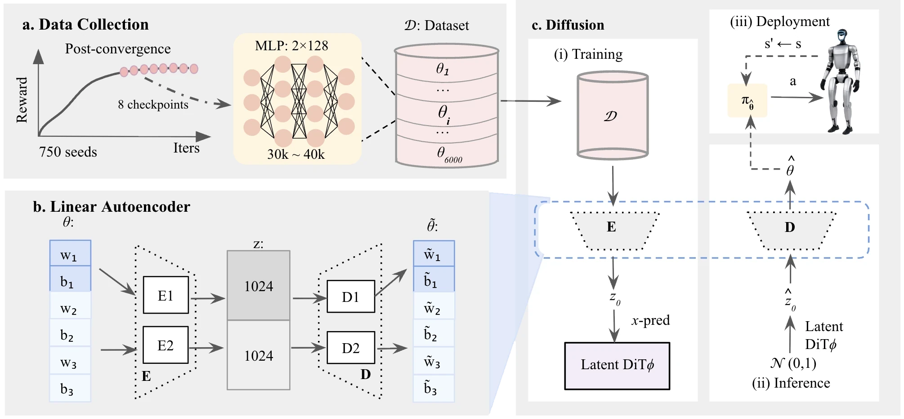
Every clip below is a network sampled from the diffusion model and run on the physical G1 without fine-tuning.
Success rate (Succ) and tracking error (TE) over 100 generated policy networks. DiT (best 90%) attains performance commensurate with the dataset, indicating that fewer than 10% of generated samples exhibit performance collapse.
| Motion | Dataset | DiT (mean) | DiT (best 90%) | DiT (best) | ||||
|---|---|---|---|---|---|---|---|---|
| Succ ↑ | TE ↓ | Succ ↑ | TE ↓ | Succ ↑ | TE ↓ | Succ ↑ | TE ↓ | |
| Walking | 0.999 ± 0.001 | 0.162 ± 0.003 | 0.993 ± 0.023 | 0.191 ± 0.020 | 0.997 ± 0.003 | 0.186 ± 0.013 | 1.000 | 0.161 |
| Dancing | 0.998 ± 0.004 | 0.037 ± 0.001 | 0.941 ± 0.213 | 0.042 ± 0.007 | 0.996 ± 0.006 | 0.040 ± 0.003 | 1.000 | 0.036 |
| Spin kick | 0.997 ± 0.004 | 0.046 ± 0.002 | 0.943 ± 0.289 | 0.053 ± 0.007 | 0.993 ± 0.009 | 0.051 ± 0.004 | 1.000 | 0.044 |
| Motion | embedding = 512 | embedding = 768 | embedding = 1024 (ours) | |||
|---|---|---|---|---|---|---|
| Prog ↑ | TE ↓ | Prog ↑ | TE ↓ | Prog ↑ | TE ↓ | |
| Walking | 0.643 ± 0.373 | 0.513 ± 0.284 | 0.890 ± 0.253 | 0.298 ± 0.139 | 0.997 ± 0.010 | 0.191 ± 0.020 |
| Dancing | 0.536 ± 0.231 | 0.076 ± 0.012 | 0.651 ± 0.243 | 0.071 ± 0.012 | 0.965 ± 0.154 | 0.042 ± 0.007 |
| Spin kick | 0.296 ± 0.122 | 0.082 ± 0.008 | 0.873 ± 0.198 | 0.067 ± 0.010 | 0.969 ± 0.136 | 0.053 ± 0.007 |
All results are reported as mean ± std over diffusion samples. Prog is task progress in the range [0, 1]: for motion tracking, it is the fraction of reference motion frames completed; for walking, it denotes the fraction of the max episode duration (20 s) survived. TE denotes tracking error: MPKPE (m) for motion tracking, and mean linear velocity command error (m/s) for walking.
Training and generated weights embedded in a shared t-SNE space, 100 samples each. For all three motions the generated weights fall within the support of the training distribution, indicating that the two sets are drawn from the same distribution.
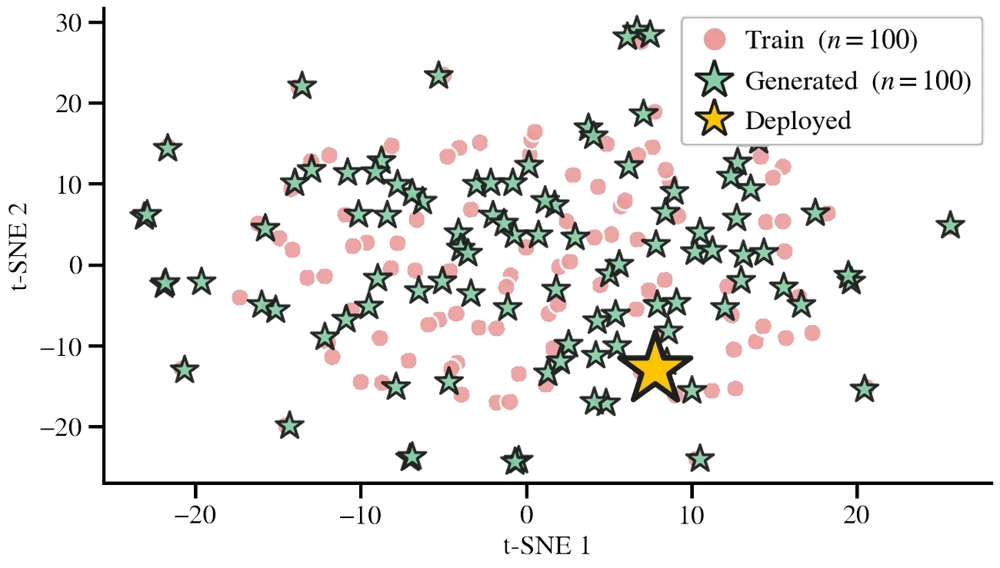
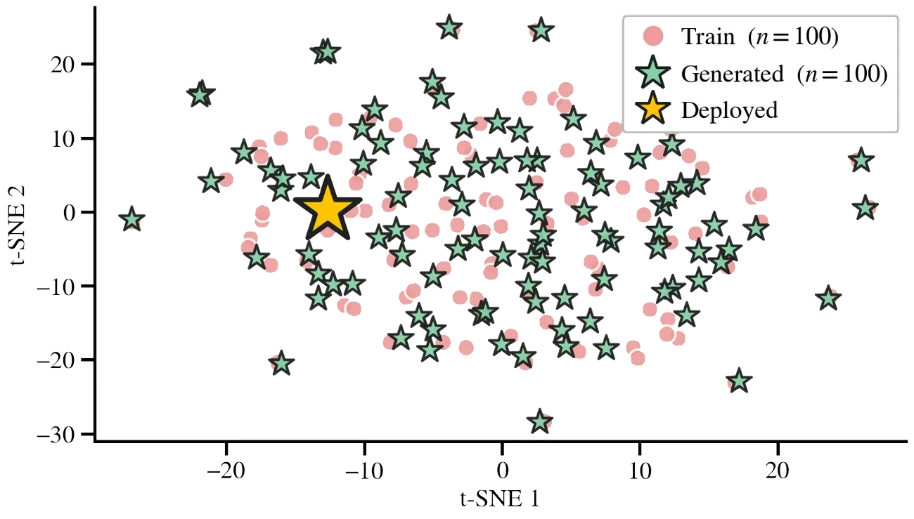
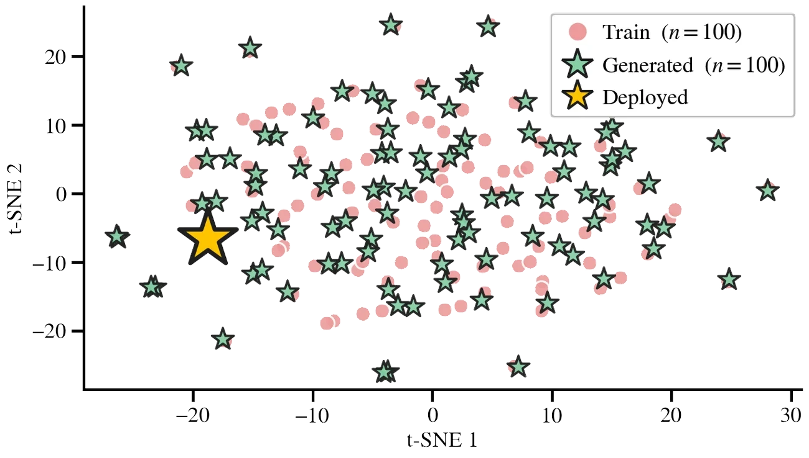
If the model merely memorized the training set, a generated network should perform no better than a training network perturbed to the same distance in weight space. We therefore measure each generated network's distance to its nearest training network, convert this distance to an equivalent noise level σ, and perturb training networks accordingly. At matched distances, generated networks consistently outperform the noise-perturbed baselines across all motions. This indicates that diffusion-generated deviations are structured rather than arbitrary, preferentially following performance-preserving directions in weight space. We refer to this behavior as local generalization. Consistently, the rapid performance degradation under increasing random perturbations shows that comparable displacement alone is insufficient to preserve functionality.
Most studies on RL- or IL-based humanoid and quadruped control primarily evaluate a policy through its reward, tracking error or other behavioral metrics. In this work, we instead examine control policies from a complementary perspective: their neural network weight space. Our diffusion generation results first suggest that this space exhibits learnable structure, motivating a further question: what information is encoded in the weight space, and to what extent is it interpretable? Although the following analysis is preliminary, we view it as a first step toward understanding the internal organization of neural control networks and toward connecting weight-space structure with their learned behaviors.
A natural starting point is to directly visualize the weight space structure. Since the control networks considered here are compact multi-layer perceptrons, we visualize their weight matrices and biases as heatmaps across three representative motions of increasing complexity, examining both the first layer and the full network. We further compare networks trained under RL and IL, as well as RL networks trained with and without domain randomization, to identify weight space patterns associated with different training paradigms and conditions. To make weight space magnitudes comparable across observation dimensions, observation normalization is applied in the RL training used for this analysis, reducing confounding effects caused by differences in input scale.
We offer comprehensive visualization of the first layer or all three, RL or IL, with or without domain randomization, one motion or another. Feel free to explore on your own and find the differences and connections.
It's not difficult to find that the first-layer weights exhibit certain structural patterns, whereas the second and third layers appear relatively less organized. We hypothesize that the structure observed in the first layer may be related to the explicit semantic meaning of the input dimensions, making it more amenable to preliminary analysis. We therefore focus primarily on the first-layer in the following sections.
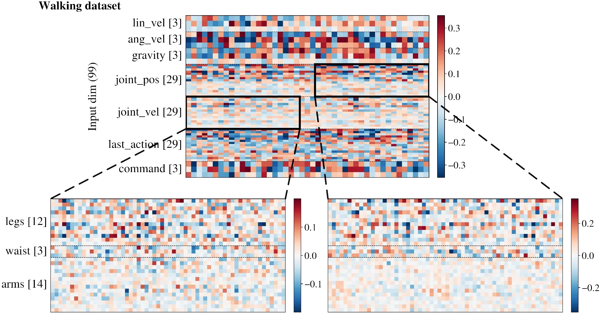
For those RL trained networks, we average the absolute first-layer weight over the 128 hidden nodes and 50 seeds to obtain a per-joint importance profile. The profile barely moves between walking, dancing and spin kick. The network spends its first layer describing the robot, not the motion.
Observation shows a structural principle in the first-layer weights: the network assigns the greatest importance to the waist region and to joint indices 1 and 7, corresponding to the left and right hip pitch joints, which collectively define the pelvic region. These are followed by the remaining joints in legs and then the arms. We therefore hypothesize that the first-layer weight matrices capture a kinematic prior rather than motion-specific knowledge. This interpretation aligns with findings in human motor control and biomechanics showing that the trunk primarily provides postural stability, while the limbs are responsible for mobility and motion execution.
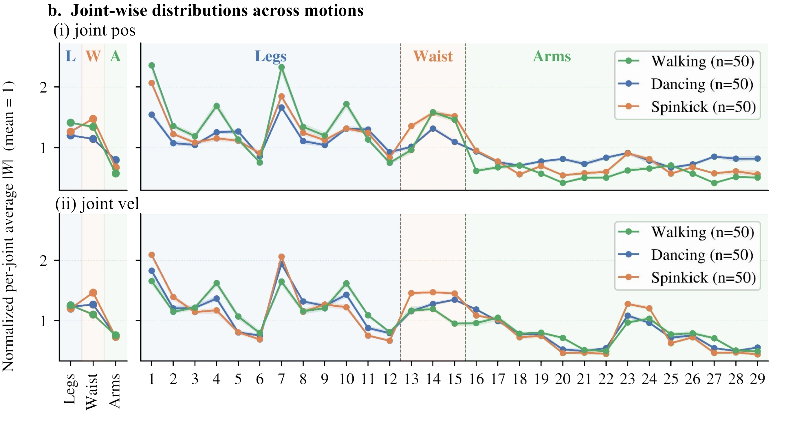
joint_pos (top) and
joint_vel (bottom) input blocks, across 29 actuated joints ordered legs (12),
waist (3), arms (14).joint_pos, joint_vel and last_actionIndex k is the position in the
joint_pos / joint_vel / last_action input blocks and in
the 29-d action output.
The emergence of a kinematic prior raises a natural question: is that prior intrinsic to the learned motion, or does it depend on how the network is trained? We therefore analyze networks trained by imitation learning (IL) performing the same motions.
For each motion we distill an IL network from a pre-trained RL network. We roll out the RL network in parallel environments to collect a buffer and distill the IL network by offline regression, achieving a functionally equivalent network obtained through an entirely different optimization process.
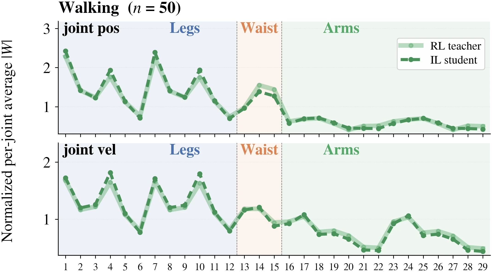
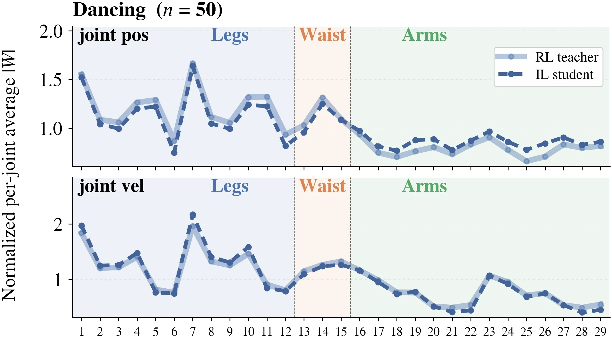
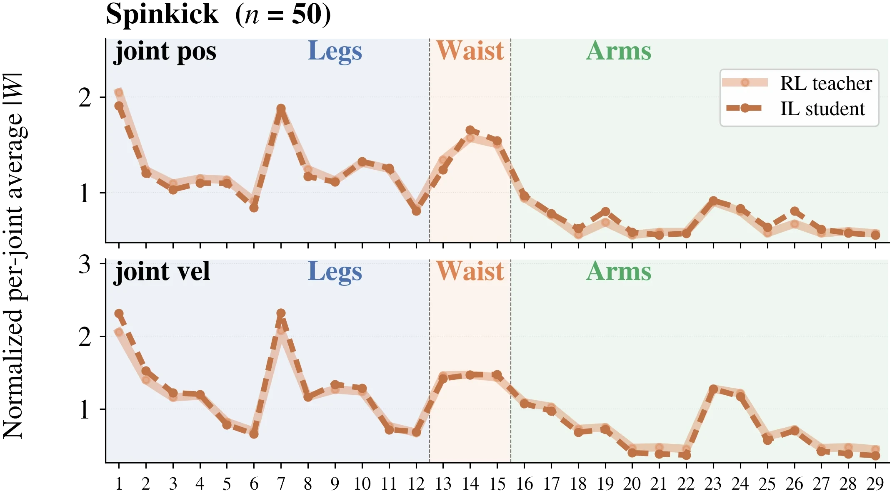
We illustrate the per-joint importance curves of RL and IL for all motions separately, and the RL and IL curves nearly overlap. The heat maps tell the same story: switch the explorer above to RL vs IL and the two matrices carry similar row structure, with the RL weights simply running larger in magnitude.
The RL and IL networks are nevertheless not trivially connected in weight space, and interpolating between them does not yield a functional policy. Therefore, the kinematic prior is not specific to the RL optimization. It may instead reflect common knowledge associated with the humanoid embodiment and the underlying motion kinematics.
A student MLP with identical depth, width, activations and parameter naming is trained by mean-squared regression on a buffer of RL rollouts, with no environment interaction and no reward. The student starts from the same initialization as its teacher. Repeated independently for each teacher: 50 teacher–student pairs per motion.
| Buffer | Nenv × T × R | Samples | Obs dim |
|---|---|---|---|
| Walking | 1024 × 500 × 2 | 1,024,000 | 99 |
| Dancing | 512 × 892 × 2 | 913,408 | 154 |
| Spin kick | 512 × 232 × 8 | 950,272 | 154 |
Nenv is the number of parallel environments, T the episode length in frames, and R the number of episodes collected per environment. The distilled networks reach success rate and tracking error comparable to their RL teachers in closed-loop simulation: functionally equivalent policies, reached by a different optimization process.
| Distillation setting | Value |
|---|---|
| Objective | MSE on the teacher's mean action |
| Optimizer | AdamW, weight decay 1 × 10⁻⁵ |
| Learning rate | 3 × 10⁻⁴ → 1 × 10⁻⁵ (cosine) |
| Batch size | 4,096 |
Shared across all three motions.
The first layer contains 128 hidden nodes, each defined by a weight vector
over the input dimensions. All three motions share joint_pos (29) and
joint_vel (29), so every hidden node carries a 58-dimensional weight vector
defined on the same inputs. We analyze the subspace those 128 vectors span, and ask whether
the subspace itself is shared across motions. Subspace similarity is measured with linear
Centered Kernel Alignment. CKA runs from 0 (unrelated) to 1 (identical); as a reference point,
two independently drawn Kaiming-initialized weight matrices reach about 0.5.
Within a motion, different random seeds converge to nearly the same subspace. Across motions the similarity drops but is still above the initialization reference. The first layer is therefore neither motion-agnostic nor motion-specific. A substantial shared component is shaped by the G1's kinematics prior, and each motion introduces its own modulation within that shared subspace.
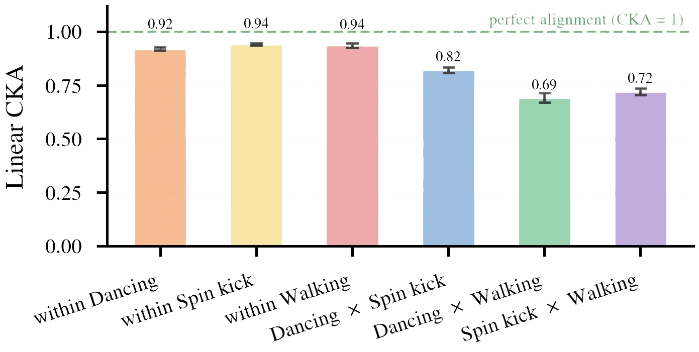
joint_pos and joint_vel inputs,
computed over the 128 hidden nodes' 58-dimensional weight vectors. The first three bars are
within-motion seed pairs; the last three are cross-motion pairs.Domain randomization is a key component of sim-to-real reinforcement learning, but its effect is typically evaluated only through policy performance. We instead ask how it changes the weight space. For each motion we train two RL networks from the same initialization, one with DR and one without, and compare their first-layer heat maps together with the element-wise difference WDR − WnoDR.
The two networks look highly similar overall, yet their difference is substantial, and the difference itself carries structure that resembles an RL-trained weight matrix rather than noise. DR therefore reshapes the weights significantly while preserving their overall distribution. The difference weights alone do not constitute a functional policy in simulation, and linear interpolation between the DR and no-DR networks fails to produce functional intermediate policies on any motion. The effect of DR cannot be represented as a simple linear displacement in weight space; it is a structured reorganization accumulated throughout RL training, leaving the motion's overall weight-space structure intact.
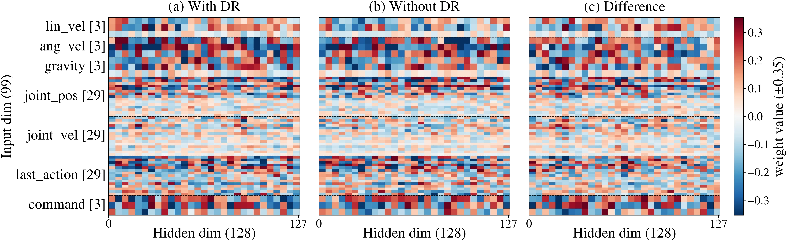
| Term | Randomised quantity | Walking | Dancing | Sampling |
|---|---|---|---|---|
| Foot friction | Sliding friction coefficient of the foot geoms | U(0.3, 1.2) | U(0.3, 1.2) | per env |
| Torso CoM offset | Centre-of-mass position of the torso link, per axis | ±(2.5, 2.5, 3.0) cm | ±(2.5, 5.0, 5.0) cm | per env, per axis |
| Encoder bias | Constant offset on the measured joint positions | ±0.015 rad | ±0.010 rad | per env, per joint |
@inproceedings{anonymous2027humanoid,
title = {Towards Understanding Humanoid Control through Network Weight Analysis},
author = {Anonymous},
booktitle = {Under review},
year = {2027}
}